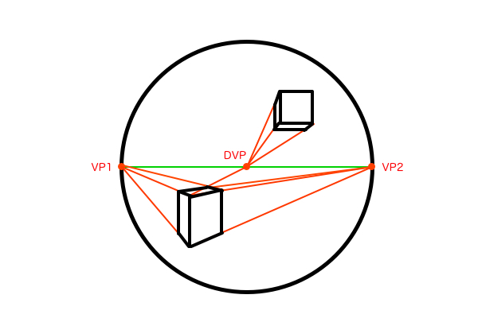
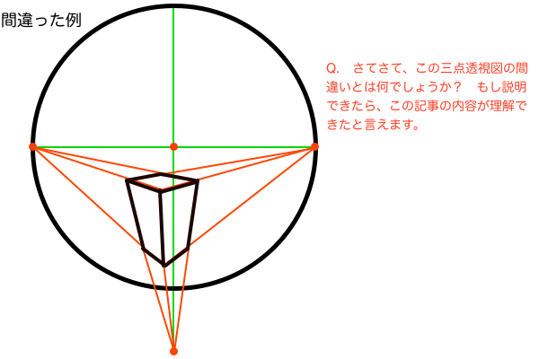
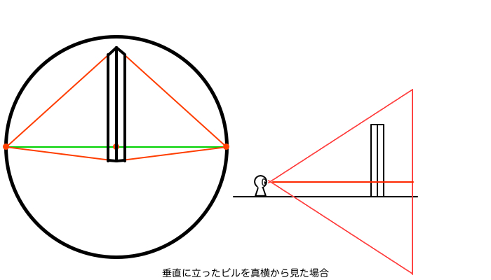
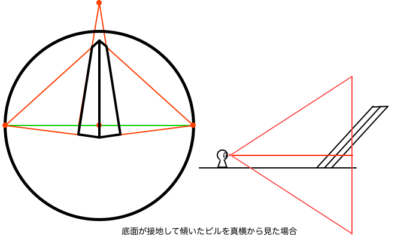
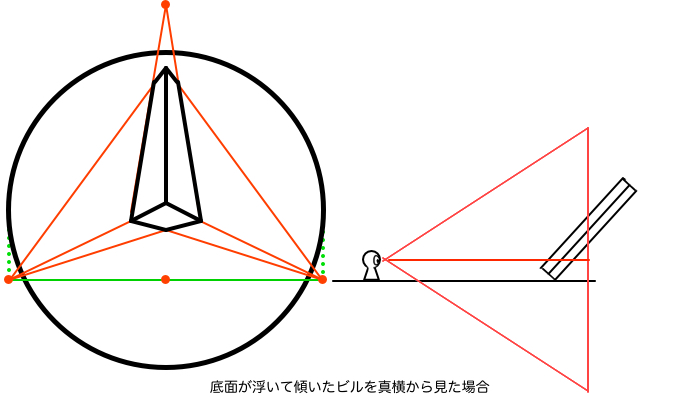
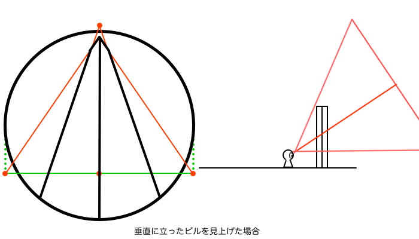
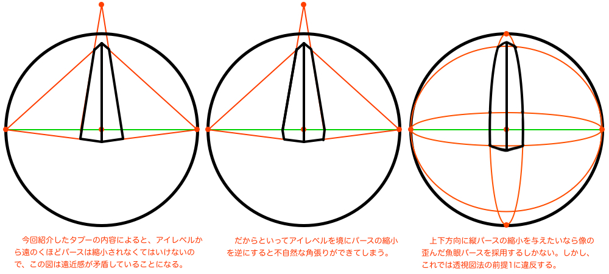
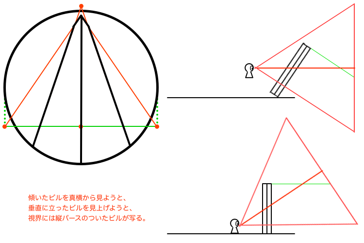

今、縦パースの解説の記事を書いていたのですが、全てを覆す事実に気づいてしまい、急遽補足の記事を書くことにしました。一体何に気づいてしまったのかというと、透視図法の大前提となる2つのルールについてです。その2つとは「透視図法は直線で描かれる」ということと、「透視図法でパースの縮小が生じるのは奥行き方向のみ」ということです。この2つを押さえておけば「三点透視図法の縦パース講座」の記事でわざわざ三部作に分けて解説しようとしていた細かい疑問点が全て解決します。
今回は、透視図法の2つの大前提についての図説と、以前市販のパース理論書やサイトで目にした「縦パースの縮小がアイレベルをまたいではいけない」というタブーが実は間違っているということの指摘、この2つのことについて書きます。（※ 2つ目のタブーの件は、どの書籍もしくはサイトで見たかを忘れてしまいましたが）
前提1「透視図法は直線で描かれる」
透視図法と聞くと1点・2点・3点を思い浮かべると思います。これらは言うまでもなく直線で幾何学的に作図する手法です。透視図法を使ってパースを描くときは原則として直線で描きます。よく「透視図法＝パース」という勘違いをしている例を見かけますが、「透視図法」というのは手法であって、ただの概念である「パース」という言葉と混同しないようにしましょう。

ちなみに、4点（5点）透視図法と呼ばれるものもありますが、それは通称「魚眼パース」のことで、これは歪んだ線で描かれるものなので今回は例外として扱います。

前提2「透視図法でパースの縮小が生じるのは奥行き方向のみ」
一般的に1点透視と2点透視では、垂直方向の縮小を生み出す縦パースを無視し、立方体の高さ方向の辺を垂直に描きます。そして、1点透視や2点透視では無視していた縦パースを取り入れたものが3点透視である。と、思っていませんか？ ご注意ください、これは真っ赤な嘘です。

三点透視図法の特徴を簡単に言うと「ビルを見上げたときのパース」ということになります。つまり、三点透視では立方体の高さ方向の辺が視界の中で垂直ではないということです。一方、1点透視や2点透視では立方体を真横から見ているものとしているから垂直に描かれますが、それを見上げたり見降ろしたら視界の中では垂直ではなく傾いた状態になります。




そんなの当然だろ、と思われるかもしれませんが、これをしっかりと定義しておかないと無意識のうちに違反する可能性があります。まぁそれは自分のことなんですが。例えば、地面に置かれている一辺が100mくらいの立法体を真横から水平方向に見つめたとします。100mの立方体というと数十階建ての建築くらいの大きさはあるので、その大きさを表現しようとして立方体の上の方を遠近感で縮小させて作図したくなりませんか？ ですが、透視図法の世界ではそのようなことはありえません。どんなに大きな立方体でも高さ方向の辺は絶対に垂直になります。大き過ぎる立方体であれば上の方は視界からフレームアウトさせて描くことになります。

このように、三点透視図法では立方体は傾いているから縦パースの縮小が生じるということが前提となります。立方体が傾くと、高さ方向の辺には必然的に奥行き方向に遠近感が生じます。そこで初めてパースの縮小を描けるわけです。どうやら、三点透視は二点透視を回転させているだけのようです。垂直に立っている立体の上下のパースの縮小は、像が歪んでいるからこそ生じるわけで、直線で描かれる透視図法ではルールとしてあってはならないということです。垂直に置かれた立方体は、どれだけ縦長くても観測者の立ち位置からの距離は変わりません。奥行き方向に位置変化がない限りパースの縮小は生じない、それが透視図法です。

三点透視のタブーとされている間違った教え
透視図法の2つの前提をちゃんと理解して空間を捉えないと、ぱっと見では間違いなく見えてもよく考えてみると錯視のようになっている立体を描いてしまいます。ここで、以前耳にした三点透視図法でやってはいけないことの話を取り上げます。それは「三点透視図法において縦パースをアイレベルをまたいで作図すると遠近法的に矛盾する」というものです。遠近法では遠くにあるものほどパースが縮小され、また、アイレベルから上下に離れるほど遠くにあると解釈されます。ビルの上の方が縮小されているのもこのルールに則っているからです。しかし、そのときにビルがアイレベルをまたぐ位置で作図されると、遠近法的な考え方においてアイレベルから遠のいているのにパースが拡大されるという事態が発生します。その矛盾を回避しようとして、アイレベルの位置でパースの縮小の方向を折り返したとしても、不自然な角張りができてしまいます。

左上図はまるで騙し絵のようなパースになってしまってます。しかし、本当にこのタブーはやってはいけないことなのでしょうか？ 実は、この記事で提唱した「透視図法の2つの前提」を導入すると問題が解決されてしまいます。左上図ではアイレベルから下方向に離れていくのにパースが拡大されていることを問題視していますが、前提2の「透視図法でパースの縮小が生じるのは奥行き方向のみ」ということを踏まえるとこの図の立体は視界の中では向こう側へ傾いていることになります。すると、アイレベルとは無関係にこちら側へ近づいてくるパースの拡大が生じるため、左上図は何も問題のない「傾いた立体の図」ということで一件落着します。

そもそも前提1により「透視図法は直線で描かれる」ということが定められているので、アイレベルの上下でパースの縮小の方向が変化するという魚眼パースのような歪み方を作図する必要はありません。つまり、「三点透視図法において縦パースがアイレベルをまたいで作図されると遠近法的に矛盾する」ということを気にしている時点で、透視図法の前提1に違反した考え方をしているということになります。
正しくは、左上図のように縦パースがついているということは立体は傾いているということになり、そうして角度がついた立体は2つの消失点を使って二点透視図法で作図できるわけで、透視図法として何も問題がないということになります。
ひとつ補足しておくと、先ほどからさり気なく描いている「底面が接地して傾いたビル」の絵をわざわざ載せている理由は、視界の中にある傾いた立体を透視図法で描くときの消失点をアイレベルの上に設定してはいけない、という意味があります。視界の中で垂直に立った立体を真横から見た場合はアイレベルの上に消失点を設定しても問題ありません。しかし、傾いた立体を真横から見た場合、もしくは垂直に立った立体を見上げた場合など、視界の中で傾いているため縦パースがついた立体の消失点は傾いた分だけアイレベルの位置から上下にずれる必要があります。そうでないと平行四辺形に歪んだ立体になってしまうため、ちゃんと作図したのに何かおかしいという絵になるので注意です。

ここで「空間の視円錐」と「視界の視円錐」が活用できる
先ほどから、立体を見上げるとその立体は「視界の中では垂直ではなく傾いている」という表現を多用してますが、わざわざ「視界の」とつけているのは、以前2つの視円錐を重ねて三点透視パース作画 〜建築パースとリアルパースの違い〜の記事で提唱した「空間の視円錐」と「視界の視円錐」を使い分ける考え方で解説しようとしているためです。「空間の視円錐」は現実世界の大地の上にいろいろな地形や建造物があるのを捉えるためのパースの基準と考えています。そして「視界の視円錐」は人間が注目している部分を作図するためのパースの基準としています。
では、高層ビルを見上げたときにどのような見え方をするかを考えた場合、「①ビルは大地に垂直に立っており、②それを見上げてアオリの構図で見ている」となります。このときの①は「空間の視円錐」を基準にして判断し、②は「視界の視円錐」を基準に判断しています。先ほどの図で、視界には「視界の視円錐」によって捉えた縦パースのついたアオリ構図のビルが写っていますが、果たしてこのビルは傾いているのか、垂直に立っているのか。それを判断するためには「空間の視円錐」によって周囲の地形の状態を捉えることが欠かせないということです。
一点透視図法や二点透視図法は「空間の視円錐」のみで事足ります。しかし、三点透視図法の縦パースの消失点を設定するには「視界の視円錐」も併用してアオリやフカンの構図を作図します。「視界の視円錐」の視心、すなわち注視点の概念を導入することで縦パースの消失点の位置が画面中央になることが決まりますので、あとは画角の設定の仕方が分かれば理屈で三点透視図法を使い倒せますね。次の記事でそのことについて論じてみようと思います。まぁ、透視図法の前提2によって二点透視を回転させれば三点透視になると決められたのですごく簡単な問題ですね。